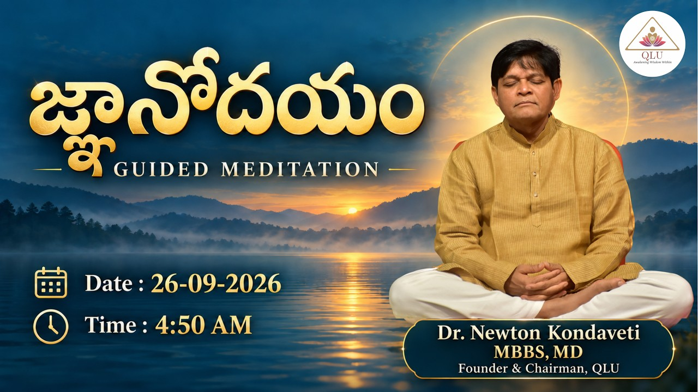

02 · Featured Classes & Insights · Full story
Meditation — From Gross to Subtle, Water Analogy, States of Consciousness
A clear guided teaching on the essence of meditation: becoming the witness and observing the observer. Dr. Newton uses the beautiful water (H2O) analogy to explain the journey from the gross body to subtler states, mapping them to Jagrat, Swapna, Sushupti, and Turiya. The session emphasizes effortless witnessing and reaching the place beyond time, space, body, and mind.
- Meditation as pure witnessing
- Observe the observer
- Water/H2O analogy — solid, liquid, vapor
- Jagrat–Swapna–Sushupti–Turiya states
Topic: Meditation — From Gross to Subtle, Water Analogy, States of Consciousness
Original Video: https://www.youtube.com/watch?v=exQQl_XyLRM
Meditation as Witnessing
Meditation is a process to observe and to stay aware and mindful. We need to stay in the witness state where we become the watcher. We witness all the changes that occur in our breathing as the mind becomes empty and silent. The breath rate comes down naturally. Meditation is an internalized state. We withdraw all our senses from the external world, just as a tortoise withdraws its limbs. Whatever is happening outside is none of our concern right now.
Observe the Observer
Right now you are observing your breath. The breath is slowing down and the mind is getting emptied. You are witnessing everything. While you are observing, also observe the observer. We don’t need to control anything — not thoughts, not breathing. Just give up the control and be in the most natural state. Become the watcher of the watcher.
Journey from Gross to Subtle
Meditation is a journey from the gross to the subtle, from the subtle to the subtlest. It is an inner journey. Keep noticing in these subtler states of consciousness whatever is happening within you. Reach the deeper place within you where time and space dissolve, beyond body and mind.
Water Analogy — States of Consciousness
Just as water (H2O) exists in different states: at lowest temperatures it is ice (solid), then liquid, then vapor at highest temperature. A meditator experiences these states. First is the solidified (sthula) state where we experience the gross body (annamaya kosha). In meditation we become more subtle, feeling lighter, losing density. We reach the subtlest states like vapor. These correspond to Jagrat (waking, using all senses), Swapna (conscious dreaming, visions at the third eye), Sushupti (deep absorbed state where one is not even aware of watching the breath), and Turiya (transcendental state). In a certain state of consciousness you transcend all limitations of body and mind. Pain can disappear. You tap into atomic-like energy within.
Watch the Watcher — Multiple Levels
We need to become aware of our awareness. Whoever is watching the breath, watching the stillness, we have to become the watcher to the watcher. We go on multiple levels: observer of the observer. The more levels we reach, the more we enter Turiya and transcendental states. There are more beautiful states of consciousness that a meditator experiences.